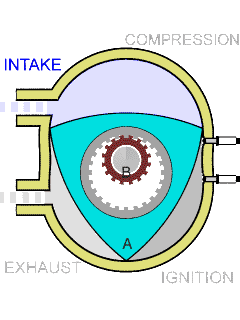
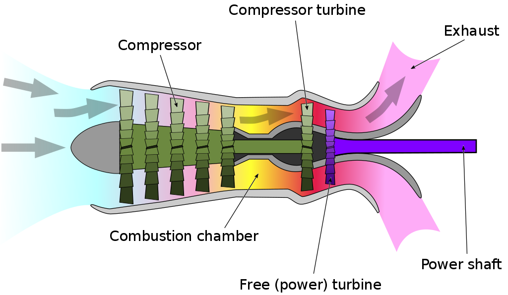
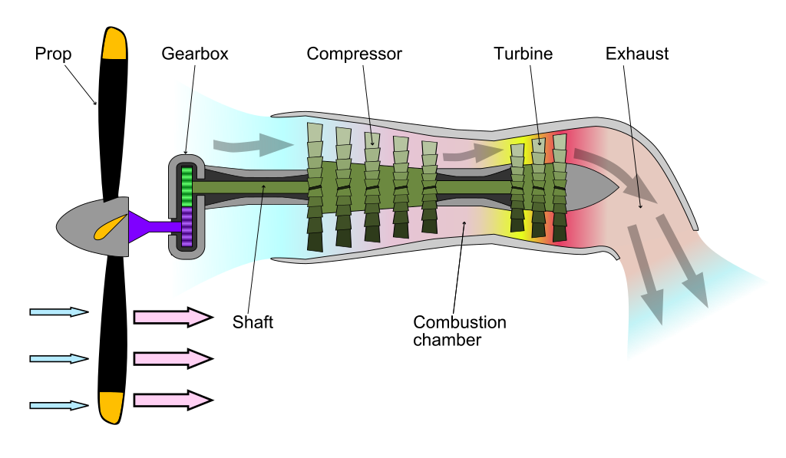
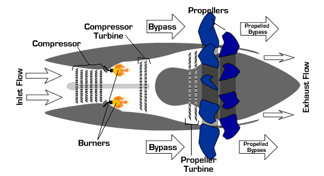

ENGINES
An internal combustion engine is a heat engine in which the combustion of a fuel occurs with an oxidizer (usually air) in a combustion chamber that is an integral part of the working fluid flow circuit. In an internal combustion engine, the expansion of the high-temperature and high-pressure gases produced by combustion applies direct force to some components of the engine. The force is applied typically to pistons, turbine blades, a rotor, or a nozzle. This force moves the component over a distance, transforming chemical energy into useful kinetic energy, and is used to propel, move or power whatever the engine is attached to. This replaced the external combustion engine for applications where the weight or size of the engine is important.
internal combustion engines are usually powered by energy-dense fuels such as gasoline or diesel fuel, liquids derived from fossil fuels. While there are many stationary applications, most internal combustion engines are used in mobile applications and are the dominant power supply for vehicles such as cars, aircraft, and boats.
Rotary engines of the Wankel design are used in some automobiles, aircraft, and motorcycles. These are collectively known as internal-combustion-engine vehicles.
Where high power-to-weight ratios are required, internal combustion engines appear in the form of combustion turbines or Wankel engines. Powered aircraft typically uses an internal combustion engine which may be a reciprocating engine. Airplanes can instead use jet engines and helicopters can instead employ turboshafts; both of which are types of turbines. In addition to providing propulsion, airliners may employ a separate internal combustion engine as an auxiliary power unit. Wankel engines are fitted to many unmanned aerial vehicles.
ENGINES ALL FIRED UP
reciprocating engine

reciprocating engine, also often known as a piston engine, is typically a heat engine ( that uses one or more reciprocating pistons to convert pressure into a rotating motion. The main type is the internal combustion engine, used extensively in motor vehicles. Internal combustion engines are further classified in two ways: either a spark-ignition (SI) engine, where the spark plug initiates the combustion; or a compression-ignition (CI) engine, where the air within the cylinder is compressed, thus heating it, so that the heated air ignites the fuel that is injected then or earlier.
Wankel engine

The Wankel engine is a type of internal combustion engine using an eccentric rotary design to convert pressure into rotating motion. Compared to the reciprocating piston engine, the Wankel engine has more uniform torque; less vibration; and, for a given power, is more compact and weighs less. The rotor, which creates the turning motion, is similar in shape to a Reuleaux triangle, except the sides have less curvature. Wankel engines deliver three power pulses per revolution of the rotor using the Otto cycle. However, the output shaft uses toothed gearing to turn three times faster giving one power pulse per revolution. In one revolution, the rotor experiences power pulses and exhausts gas simultaneously, while the four stages of the Otto cycle occur at separate times. For comparison, in a two-stroke piston engine, there is one power pulse for each crankshaft revolution and, in a four-stroke piston engine, one power pulse for every two revolutions.
Turboshaft

A turboshaft engine is a form of gas turbine that is optimized to produce shaft power rather than jet thrust. In concept, turboshaft engines are very similar to turbojets, with additional turbine expansion to extract heat energy from the exhaust and convert it into output shaft power. They are even more similar to turboprops, with only minor differences, and a single-engine is often sold in both forms.
Turboshaft engines are commonly used in applications that require a sustained high power output, high reliability, small size, and lightweight. These include helicopters, auxiliary power units, boats and ships, tanks, hovercraft, and stationary equipment.
Turboprop

A turboprop engine is a turbine engine that drives an aircraft propeller. A turboprop consists of an intake, reduction gearbox, compressor, combustor, turbine, and propelling nozzle. Air enters the intake and is compressed by the compressor. Fuel is then added to the compressed air in the combustor, where the fuel-air mixture then combusts. The hot combustion gases expand through the turbine stages, generating power at the point of exhaust. Some of the power generated by the turbine is used to drive the compressor and electric generator. The gases are then exhausted from the turbine. In contrast to a turbojet or turbofan, the engine's exhaust gases do not provide enough energy to create significant thrust, since almost all of the engine's power is used to drive the propeller.
Propfan
